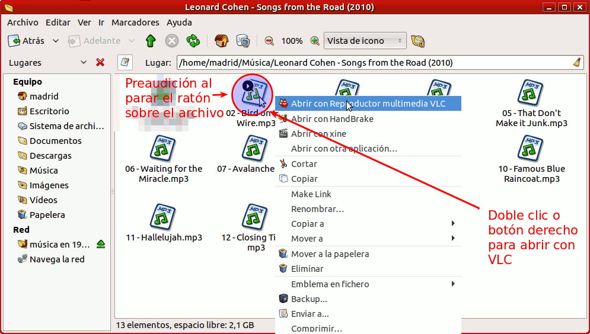
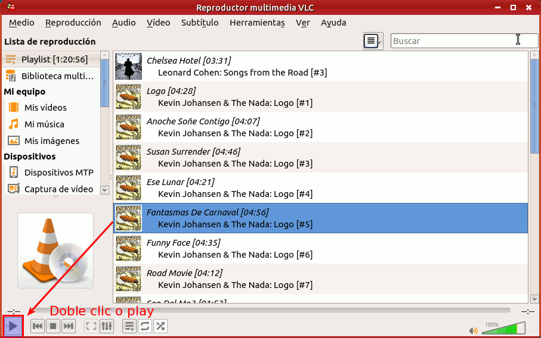
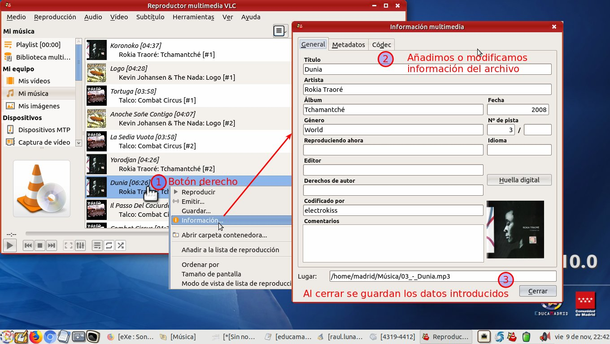
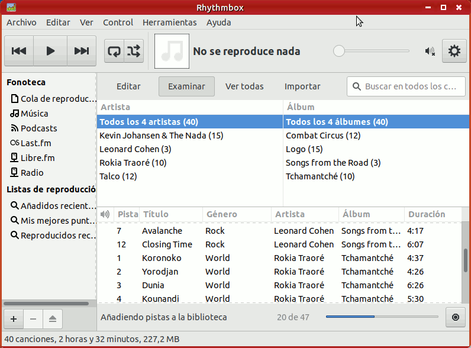

Sonido
En el menú de Sonido y vídeo de MAX 10, al igual que teníamos en MAX 9.x, disponemos de dos reproductores de audio. VLC es el reproductor multimedia por defecto y nos permite reproducir tanto audio como vídeo, mientras que Rhythmbox está enfocado específicamente hacia el sonido. Pulsando sobre sus iconos a continuación se desplegará un acordeón con las orientaciones básicas sobre cada uno de ellos.
 VLC
VLC
La versión 10 de MAX utiliza VLC como reproductor multimedia por defecto

Cómo escuchar un fichero de audio
Al ser la aplicación por defecto basta un doble clic sobre el archivo de audio para lanzar el reproductor, lo cual hace innecesaria la utilización del botón derecho que nos lo muestra como acción por defecto.
En vista de icono o de lista compacta el sistema nos brinda una preaudición al posar el ratón sobre el archivo, sin lanzar todavía ningún reproductor.

O también una vez abierto VLC podemos pulsar el icono y elegir cualquier archivo de nuestra colección de música a la que podemos acceder pulsando en el icono  que activa el acceso a las listas
que activa el acceso a las listas

Revisar los audios disponibles y crear listas
Desde las listas podremos comprobar como VLC añade automáticamente cualquier carpeta o archivo que figure en la carpeta Música del usuario.

Podemos crear listas desde la colección de música disponible, usando el botón derecho y eligiendo la opción de añadir a la Lista de reproducción o bien, desde el menú superior en Medio → Abrir múltiples archivos

Cómo editar las etiquetas de un audio
Para editar las propiedades de un audio basta pulsar sobre el mismo con el botón derecho del ratón, y pulsar en "Información". A continuación se abrirá una ventana donde se pueden añadir o quitar etiquetas.
Esto puede ser bastante conveniente cuando el centro educativo cuenta con un programa de radio, pues tener los programas guardados en ficheros y bien etiquetados permite que cualquier profesor pueda localizar y usar los audios fácilmente para su actividad docente.

 Rhythmbox
Rhythmbox
Rhythmbox es uno de los reproductores incluidos en MAX 10 que sirve a la vez para reproducir ficheros de audio y también para clasificarlos de forma que tengamos una buena organización de los mismos.

Se tratan a continuación los siguientes apartados:
- Cómo escuchar un fichero de audio.
- Cómo añadir un audio o carpeta de audios a la colección.
- Cómo editar las etiquetas de un fichero de audio.
Cómo escuchar un fichero de audio
Al no ser la aplicación por defecto tenemos que usar el botón derecho del ratón eligiendo la opción "Abrir con Reproductor de música Rhythmbox":

O también una vez abierto Rhythmbox, basta con elegir un audio de dentro de la colección que se tenga y hacer doble clic o pulsar el botón de Iniciar la reproducción  :
:

Cómo añadir un audio o carpeta de audios a la colección
Dado que una de las bondades de este programa es la clasificación de audios, para importar una carpeta con audios a la colección hay que ir al botón "Importar". A continuación se elige la carpeta en cuestión, y el programa irá clasificando los audios según unas etiquetas que llevan prácticamente todos los ficheros de audio, especialmente si son comprados. Algunas de ellas son autor, título, título de álbum, género, etc. Si son creados por nosotros mismos, se suele ofrecer la posibilidad de incluir esta información en el audio.
Cómo editar las etiquetas de un audio
Para editar las propiedades de uno o varios audios, basta con seleccionar los que se quiera, pulsar en el botón derecho del ratón, y pulsar en "Propiedades". A continuación se abrirá una ventana donde se pueden añadir o quitar estas etiquetas.
Esto puede ser bastante conveniente cuando el centro educativo cuenta con un programa de radio, pues tener los programas guardados en ficheros y bien etiquetados permite que cualquier profesor pueda localizar y usar los audios fácilmente para su actividad docente. En el siguiente video se muestra cómo añadir una carátula.